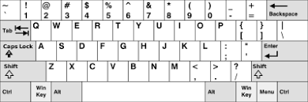
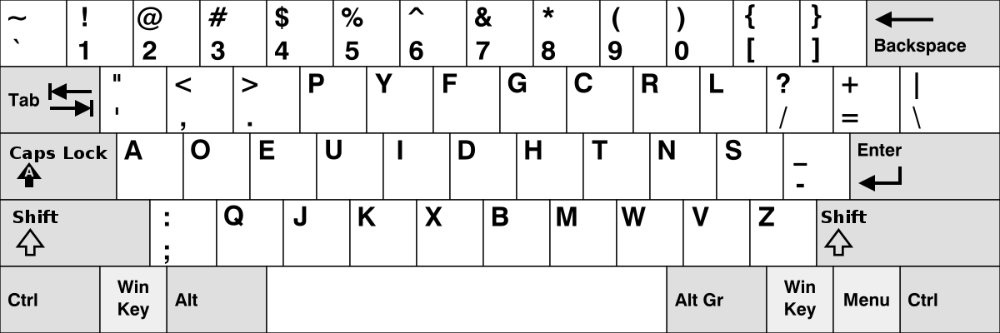
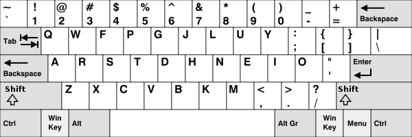
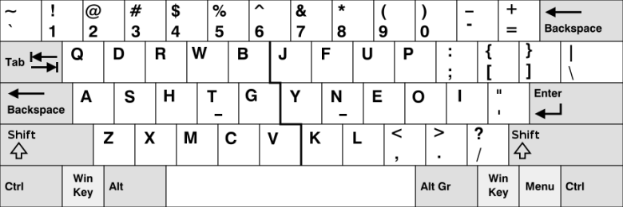

QWERTY, (along with its direct derivatives QWERTZ and AZERTY), is the base keyboard layout which is most widely used.
History: QWERTY entered the market in 1874 was supposedly designed for typewriters to solve a very specific problem–to keep the types from jamming against each other. The most frequently used keys were placed apart from each other to prevent them from jamming.
Cons: Does not conform to the ergonomic layout.
Dvorak layout puts the majority of key strokes to the home row, using about 60% of the finger motion required by QWERTY, which makes typing faster and more ergonomic.
It puts vowels and the most used symbol characters are on the left, and the most used consonants are on the right. Typing alternating between hands becomes more faster, and it could reduce error and fatigue.
The Dvorak keyboard puts the more often used keys on the right hand side, 56% of the typing done by the right hand, which is convenient for majority of people, while with QWERTY keyboards, more typing is done by the left hand.
Cons: Performance difference compared with QWERTY layout is not outstanding, the gain is too small compared to the costs of retraining.
Similar to the DVORAK，it puts the majority of key strokes to the home row, paying attention to distribution of left hand and right hand load and so on.
Meanwhile, it retains most of position non-alphabetic characters and keyboard shortcuts in QWERTY layout, so the learning cost is low as many users have already accustomed to the QWERTY layout.
Cons: Fingers' Lateral movement is clumsy.
Frequent keys are placed within the natural range of motion of the fingers, it has low level of overall finger travel lateral movement of the fingers and wrists is reduced. Workman keyboard makes typing ergonomic, and efficient.
It reduces load on the right pinky andbalances left-hand and right-hand usage compared to DVORAK and COLEMAK.
Cons: 21 characters are different from QWERTY causes high learning cost. Left ring finger has slightly higher load compared to QWERTY, DVORAK, and COLEMAK.
